Aula 8:
Controle via Realimentação de Estados
Prof. Marcos Rogério Fernandes
01 de outubro de 2026
Objetivos
Os objetivos dessa aula são entender:
- Controlabilidade;
- Observabilidade;
- Realimentação de estados;
- Observadores de estado;
- Controle com rastreamento;
Modelo em espaço de estados em tempo discreto
$$ \begin{aligned} x_{k+1}&=A_dx_k+B_du_k\\ y_k&=Hx_k+Du_k \end{aligned} $$
Modelo em espaço de estados em tempo discreto
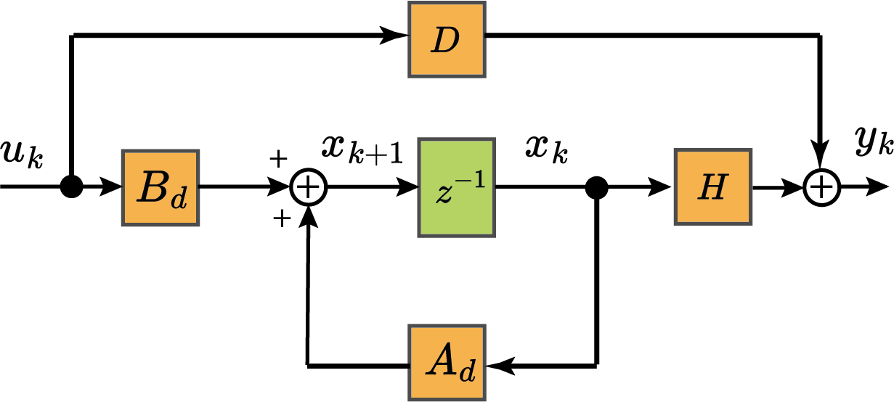
Solução da equação de estados em tempo discreto
$$ \begin{aligned} x_k=A_d^kx_0+\sum_{j=0}^{k-1}A_d^{k-j-1}B_d u_j, \quad k=1,2,3,\ldots \end{aligned} $$
Solução da equação de estados em tempo discreto
Saída: $$ \begin{aligned} y_k=HA_d^kx_0+H\sum_{j=0}^{k-1}A_d^{k-j-1}B_d u_j+Du_k, \\k=1,2,3,\ldots \end{aligned} $$
Controlabilidade
É possível levar o sistema para qualquer estado desejado em um tempo finito?
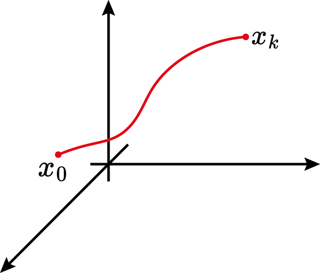
Controlabilidade
É possível levar o sistema para qualquer estado desejado em um tempo finito?
$$ \text{Existe uma sequência de ações de controle } u_0,u_1,\ldots,u_{k-1} \\ \text{ tal que: } \\x_k=A_d^kx_0+\sum_{j=0}^{k-1}A_d^{k-1-j}B_du_j $$Controlabilidade
Controlabilidade
Controlabilidade
$$ \begin{aligned} \begin{bmatrix} x_1-Ax_0\\ x_2-A^2x_0\\ x_3-A^3x_0\\ \vdots\\ x_k-A^kx_0 \end{bmatrix}=\begin{bmatrix} Bu_0\\ ABu_0+Bu_1\\ A^2Bu_0+ABu_1+Bu_2\\ \vdots \\ A^{k-1}Bu_0+\cdots+ABu_{k-2}+Bu_{k-1} \end{bmatrix} \end{aligned} $$
Controlabilidade
$$ \begin{aligned} \begin{bmatrix} x_1-Ax_0\\ x_2-A^2x_0\\ x_3-A^3x_0\\ \vdots\\ x_k-A^kx_0 \end{bmatrix}=\begin{bmatrix} B & 0 & 0 & \cdots & 0\\ AB & B & 0 & \cdots & 0\\ A^2B & AB & B & \cdots & 0\\ \vdots \\ A^{k-1}B& A^{k-2}B & A^{k-3}B & \cdots &B \end{bmatrix}\begin{bmatrix} u_0\\ u_1\\ u_2\\ \vdots \\ u_{k-1} \end{bmatrix} \end{aligned} $$
Controlabilidade
$$ \begin{aligned} x_k-A^kx_0 =\begin{bmatrix} A^{k-1}B& A^{k-2}B & A^{k-3}B & \cdots &B \end{bmatrix}\begin{bmatrix} u_0\\ u_1\\ u_2\\ \vdots \\ u_{k-1} \end{bmatrix} \end{aligned} $$
Controlabilidade
$$ \begin{aligned} x_k-A^kx_0 =\underbrace{\begin{bmatrix} A^{k-1}B& A^{k-2}B & A^{k-3}B & \cdots &B \end{bmatrix}}_{\mathcal{C}}\begin{bmatrix} u_0\\ u_1\\ u_2\\ \vdots \\ u_{k-1} \end{bmatrix} \end{aligned} $$
Controlabilidade
$$ \begin{aligned} x_k-A^kx_0 =\underbrace{\begin{bmatrix} B & \cdots & A^{k-3}B & A^{k-2}B & A^{k-1}B \end{bmatrix}}_{\mathcal{C}}\begin{bmatrix} u_{k-1}\\ \vdots\\ u_2\\ u_1\\ u_0 \end{bmatrix} \end{aligned} $$
Controlabilidade
$$ \begin{aligned} x_k-A^kx_0 =\mathcal{C}\begin{bmatrix} u_{k-1}\\ u_{k-2}\\ \vdots\\ u_1 \\ u_0 \end{bmatrix} \end{aligned} $$
Controlabilidade
Controlabilidade
Controlabilidade Completa
Portanto, se $\text{rank}(\mathcal{C})=n$ então existe uma sequência $\{u_j\}_{j=0}^{k-1}$ que leva o sistema do estado $x_0$ até $x_k$.
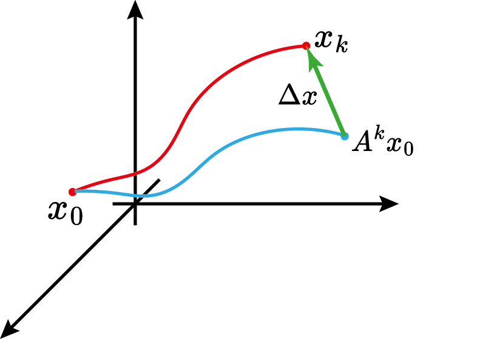
Controlabilidade: interpretação geométrica
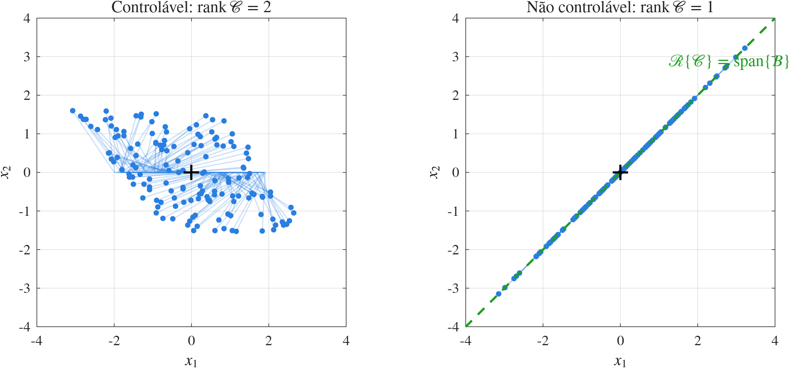
Estados alcançáveis a partir de $x_0=0$ em $2$ passos com entradas aleatórias. Se $\text{rank}\,\mathcal{C}\lt n$, o estado fica preso em $\mathcal{R}\{\mathcal{C}\}$ (esq.: $A$ rotação, $B=[1\;0]^\top$; dir.: $A=0{,}8I$, $B=[1\;1]^\top$).
Controlabilidade: animação
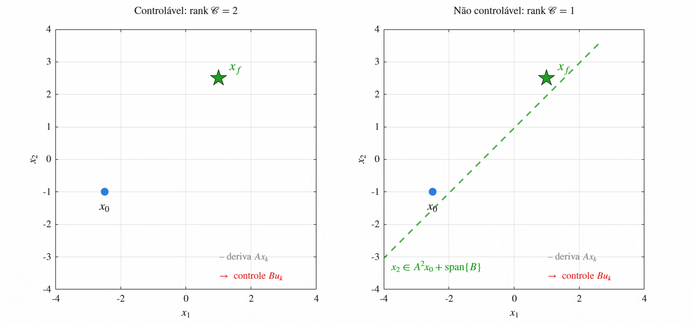
A cada passo $x_{k+1}=Ax_k+Bu_k$: a deriva $Ax_k$ (cinza) é imposta pela dinâmica e o controle $Bu_k$ (vermelho) só empurra na direção de $B$. Esq.: $B$ e $AB$ são independentes e geram o plano → $x_f$ é alcançado em $n=2$ passos. Dir.: $B$ e $AB$ são paralelos → $x_2$ fica preso na reta $A^2x_0+\mathrm{span}\{B\}$.
Controlabilidade
Controlabilidade
Controlabilidade
Controlabilidade Completa
Se $\text{rank}(\mathcal{C})=n$, então existe $\mathcal{C}^{-1}$ e pode-se obter a sequência de ações de controle $u_k\in\mathbb{R}$ na forma
$$ \begin{aligned} \begin{bmatrix} u_{n-1}\\ u_{n-2}\\ \vdots\\ u_1 \\ u_0 \end{bmatrix}= \mathcal{C}^{-1}\Delta x \end{aligned} $$Controlabilidade: exemplo numérico
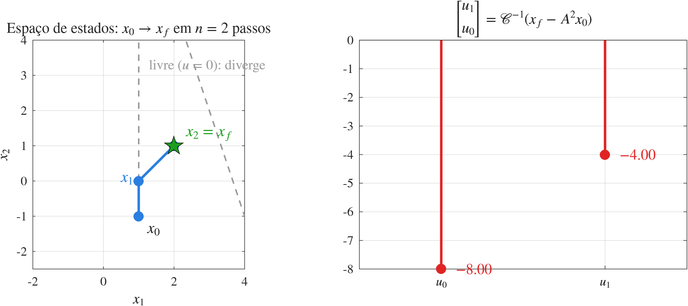
$A=\begin{bmatrix}2&1\\5&-3\end{bmatrix}$, $B=\begin{bmatrix}0\\1\end{bmatrix}$: de $x_0=[1\;\,-1]^\top$ até $x_f=[2\;\,1]^\top$ em $n=2$ passos com $u_0=-8$ e $u_1=-4$. Note a ordem invertida: $\mathcal{C}=[B\;\;AB]$ multiplica $[u_1\;\;u_0]^\top$.
Exemplo no Matlab
$$ x_{k+1} = \begin{bmatrix}2 & 1 \\ 5 & -3\end{bmatrix}x_k+ \begin{bmatrix}0 \\ 1\end{bmatrix}u_k $$
Esse sistema é controlável?
$$ \mathcal{C}=\begin{bmatrix}B & AB\end{bmatrix} $$Exemplo no Matlab: solução
A = [2 1; 5 -3];
B = [0; 1];
Cc = [B A*B] % ou Cc = ctrb(A,B)
% Cc = [0 1
% 1 -3]
rank(Cc) % 2 = n -> controlável
det(Cc) % -1 (não singular)
% sequência que leva x0 -> xf em 2 passos
x0 = [1; -1]; xf = [2; 1];
v = Cc \ (xf - A^2*x0); % v = [u1; u0]
u = flipud(v) % u0 = -8, u1 = -4$\det\mathcal{C}=-1\neq0\;\Rightarrow\;\text{rank}\,\mathcal{C}=2$: sistema controlável
Controlabilidade Completa
Se $u_k\in\mathbb{R^m}$ (multiple-input), com $m\le n$, então é suficiente que exista $u_0,u_1,\ldots,u_{\lceil\frac{n}{m}\rceil-1}$ ações de controle para levar o sistema para qualquer estado. Além do mais, se $\text{rank}(\mathcal{C})=n$, então pode-se obter a sequência de ações de controle na forma
$$ \begin{bmatrix} u_{\ell-1}\\ \vdots \\ u_1\\ u_0 \end{bmatrix}= \mathcal{C}^\trp(\mathcal{C}\mathcal{C}^\trp)^{-1}\Delta x, \qquad \ell=\Bigl\lceil\frac{n}{m}\Bigr\rceil $$$\mathcal{C}\in\mathbb{R}^{n\times m\ell}$ é "largo" ($m\ell\ge n$): há infinitas soluções e esta é a de menor energia $\|u\|$ (pseudo-inversa à direita). Obs.: $\ell=\lceil n/m\rceil$ passos bastam quando $\text{rank}\,[B\;AB\;\cdots\;A^{\ell-1}B]=n$; caso contrário são necessários mais passos (até $n$).
Exemplo no Matlab
$$ x_{k+1} = \begin{bmatrix} 2 & 2 & 1 & 3\\ 2 & 1 & 2 & 0\\ 1 & 1 & 0 & 1\\ 3 & 3 & 3 & 2 \end{bmatrix}x_k+ \begin{bmatrix} 1 & 0 \\ 0 & 1\\ 0 & 0 \\ 0 & 0 \end{bmatrix}u_k $$
Esse sistema é controlável?
$$ \mathcal{C}=\begin{bmatrix}B & AB & A^2B & A^3B\end{bmatrix} $$Exemplo no Matlab: solução
A = [2 2 1 3; 2 1 2 0; 1 1 0 1; 3 3 3 2];
B = [1 0; 0 1; 0 0; 0 0];
Cc = [B A*B A^2*B A^3*B]; % 4 x 8 (ou ctrb(A,B))
rank(Cc) % 3 < 4 -> NÃO controlável
rank([B A*B]) % 3: A^2B e A^3B não acrescentam direções$\text{rank}\,\mathcal{C}=3\lt n=4$: sistema não controlável — existe uma direção do espaço de estados que nenhuma sequência de entradas consegue alcançar.
Observabilidade
É possível conhecer a condição inicial do sistema dado um conjunto finito de medidas da saída e o sinal de entrada?
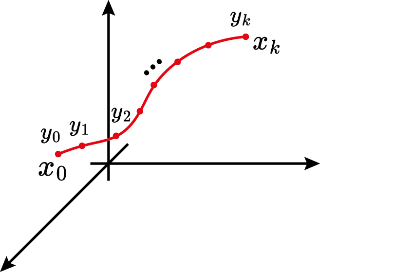
Observabilidade
$$ \begin{aligned} y_0&=Hx_0+Du_0\\ y_1&=Hx_1+Du_1=HAx_0+HBu_0+Du_1\\ \vdots \\ y_k&=HA^kx_0+HA^{k-1}Bu_0+\cdots+HBu_{k-1}+Du_k \end{aligned} $$
Observabilidade
$$ \begin{aligned} y_0-Du_0&=Hx_0\\ y_1-HBu_0-Du_1&=HAx_0\\ \vdots \\ y_k-H\sum_{j=0}^{k-1}A^{k-1-j}Bu_j-Du_k&=HA^kx_0 \end{aligned} $$
Observabilidade
$$ \begin{aligned} \begin{bmatrix} y_0-Du_0\\ y_1-HBu_0-Du_1\\ \vdots\\ y_k-H\sum_{j=0}^{k-1}A^{k-1-j}Bu_j-Du_k \end{bmatrix} &= \begin{bmatrix} Hx_0\\ HAx_0\\ \vdots \\ HA^kx_0 \end{bmatrix} \end{aligned} $$
Observabilidade
$$ \begin{aligned} \begin{bmatrix} y_0-Du_0\\ y_1-HBu_0-Du_1\\ \vdots\\ y_k-H\sum_{j=0}^{k-1}A^{k-1-j}Bu_j-Du_k \end{bmatrix} &= \begin{bmatrix} H\\ HA\\ \vdots \\ HA^k \end{bmatrix}x_0 \end{aligned} $$
Observabilidade
$$ \begin{aligned} \begin{bmatrix} y_0-Du_0\\ y_1-HBu_0-Du_1\\ \vdots\\ y_k-H\sum_{j=0}^{k-1}A^{k-1-j}Bu_j-Du_k \end{bmatrix} &= \underbrace{\begin{bmatrix} H\\ HA\\ \vdots \\ HA^k \end{bmatrix}}_{\mathcal{O}}x_0 \end{aligned} $$
Observabilidade
$$ \begin{aligned} \begin{bmatrix} y_0-Du_0\\ y_1-HBu_0-Du_1\\ \vdots\\ y_k-H\sum_{j=0}^{k-1}A^{k-1-j}Bu_j-Du_k \end{bmatrix} &= \mathcal{O}x_0 \end{aligned} $$
Observabilidade
Observabilidade
Observabilidade
Observabilidade
$$ \begin{aligned} \mathcal{O}^{-1}\Delta y &= \mathcal{O}^{-1}\mathcal{O}x_0 \end{aligned} $$
Observabilidade
$$ \begin{aligned} x_0 &= \mathcal{O}^{-1}\Delta y \end{aligned} $$
Observabilidade Completa
Portanto, se $\text{rank}(\mathcal{O})=n$ então é possível reconstruir $x_0$ através das medições $\{y_j\}_{j=0}^{k}$ e $\{u_j\}_{j=0}^{k}$.
Observabilidade: interpretação geométrica
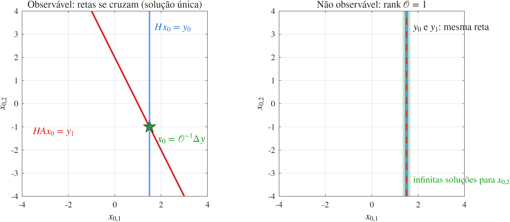
Cada medida $y_k=HA^kx_0$ é uma reta (restrição linear) no plano de $x_0$. Esq.: $A=\begin{bmatrix}2&1\\5&-3\end{bmatrix}$, $H=[1\;0]$ → as retas se cruzam em um único $x_0$. Dir.: $A=0{,}8I$ → as medidas repetem a mesma informação.
Observabilidade: animação
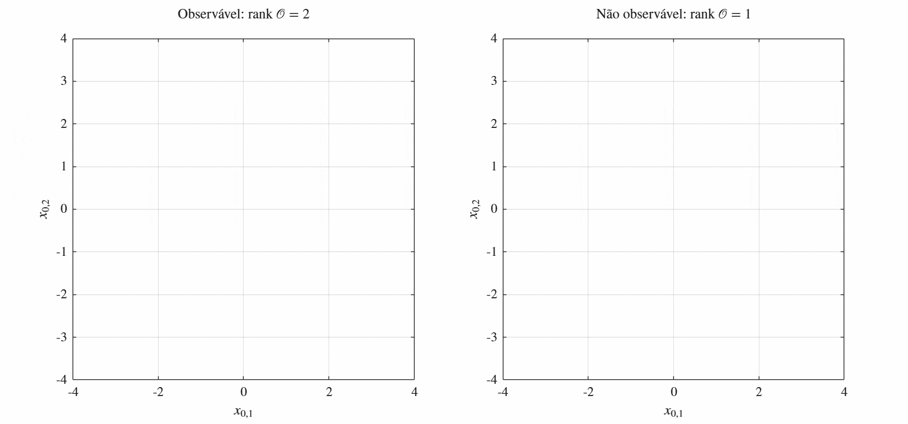
Cada medida $y_k=HA^kx_0$ restringe $x_0$ a uma reta. Um candidato $\hat x_0$ deslizando sobre a reta de $y_0$ só reproduz também $y_1$ na interseção (esq., observável); se as retas coincidem (dir., $\text{rank}\,\mathcal{O}=1$), infinitos candidatos explicam as mesmas medidas.
Exemplo no Matlab
$$ x_{k+1} = \begin{bmatrix}2 & 1 \\ 5 & -3\end{bmatrix}x_k+ \begin{bmatrix}0 \\ 1\end{bmatrix}u_k\\ y_k = \begin{bmatrix}1 & 0\end{bmatrix}x_k $$
Esse sistema é observável?
$$ \mathcal{O}=\begin{bmatrix}H \\ HA\end{bmatrix} $$Exemplo no Matlab: solução
A = [2 1; 5 -3];
H = [1 0];
Ob = [H; H*A] % ou Ob = obsv(A,H)
% Ob = [1 0
% 2 1]
rank(Ob) % 2 = n -> observável
% reconstrução de x0 a partir de y0 e y1 (u = 0)
y = [1.5; 2]; % medidas y0, y1
x0 = Ob \ y % x0 = [1.5; -1]$\det\mathcal{O}=1\neq0\;\Rightarrow\;\text{rank}\,\mathcal{O}=2$: sistema observável
Observabilidade Completa
Se $y_k\in\mathbb{R}^p$ (multiple-output), com $p\le n$, então é suficiente que existam $y_0,y_1,\ldots,y_{\lceil\frac{n}{p}\rceil-1}$ medições para obter $x_0$. Além do mais, se $\text{rank}(\mathcal{O})=n$, então pode-se obter $x_0$ na forma
$$ x_0= (\mathcal{O}^\trp \mathcal{O})^{-1}\mathcal{O}^\trp \Delta y $$
Projeto de Controladores em Espaço de Estados
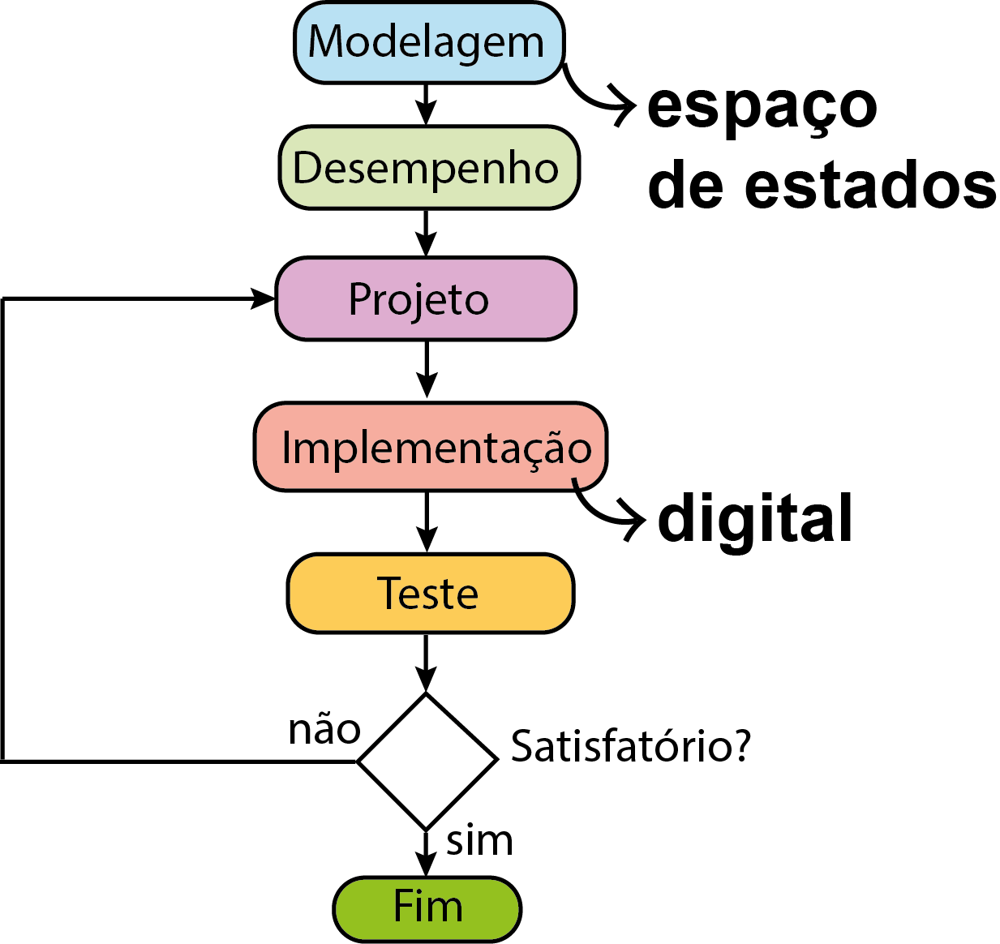
Controle via Realimentação de Estados

$$ u_k=-Kx_k $$
Exemplo: Pêndulo Invertido

Exemplo: Pêndulo Invertido

Realimentação de Estados

Realimentação de Estados
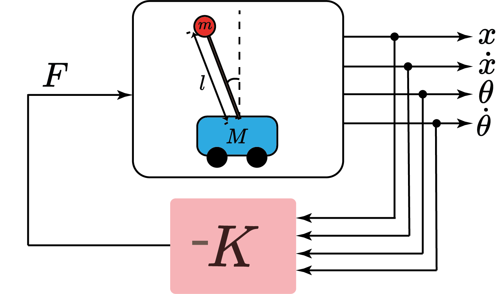
Controle via Realimentação de Estados
$$ u_k=-Kx_k $$
Portanto, a dinâmica em malha-fechada é$$ x_{k+1}=Ax_k+Bu_k $$
Controle via Realimentação de Estados
$$ u_k=-Kx_k $$
Portanto, a dinâmica em malha-fechada é$$ x_{k+1}=Ax_k+B(-Kx_k) $$
Controle via Realimentação de Estados
$$ u_k=-Kx_k $$
Portanto, a dinâmica em malha-fechada é$$ x_{k+1}=(A-BK)x_k $$
Controle via Realimentação de Estados
Portanto, a dinâmica em malha-fechada é assintoticamente estável se, e somente se,
$$ |\lambda\{A-BK\}| < 1 $$
Equação Característica
$$ x_{k+1}=Ax_k $$
$$ \Delta(A)=\det(\lambda I-A) $$
As raízes do polinômio $\Delta(A)$ são os autovalores de $A$: $$ \lambda\{A\}=\{\lambda_i: \det(\lambda_iI-A)=0,i=1,\ldots,n\} $$Equação Característica
$$ x_{k+1}=Ax_k $$
$$ \Delta(A)=\det(\lambda I-A) $$
Para sistemas controláveis e observáveis (realização mínima) os autovalores de $A$ são iguais aos pólos da função de transferência!Ou seja, para sistemas SISO, se não ocorrer cancelamento de zeros com pólos em $H(zI-A)^{-1}B$, então o sistema é controlável e observável!
Projeto por Alocação de Pólos
$$ x_{k+1}=Ax_k+Bu_k\\ u_k=-Kx_k $$
$$ \Delta_d(A-BK)=(z-p_1)(z-p_2)\cdots(z-p_n) $$
em que $p_1,p_2,\ldots,p_n$ são os pólos desejados em malha fechada!Projeto por Alocação de Pólos
$$ x_{k+1}=Ax_k+Bu_k\\ u_k=-Kx_k $$
$$ \Delta_d(A-BK)=z^n+\beta_1z^{n-1}+\cdots+\beta_{n-1}z+\beta_n $$
em que $p_1,p_2,\ldots,p_n$ são os pólos desejados em malha fechada!Forma Canônica Controlável
Função de transferência (SISO): $$ \frac{Y(z)}{U(z)}=\frac{z^m+b_1z^{m-1}+\cdots+b_{m-1}z+b_m}{z^n+a_1z^{n-1}+\cdots+a_{n-1}z+a_n}, m\le n $$
Forma Canônica Controlável
$$ x_{k+1}=\begin{bmatrix} 0 & 1 & 0 & \cdots & 0\\ 0 & 0 & 1 & \cdots & 0\\ \vdots & \vdots & \vdots & \ddots & \vdots \\ 0 & 0 & 0 & \cdots & 1\\ -a_n & -a_{n-1} & -a_{n-2} & \cdots & -a_1 \end{bmatrix}x_k+\begin{bmatrix} 0\\ 0\\ \vdots\\ 0\\ 1 \end{bmatrix}u_k $$
Forma Canônica Controlável
Dado as matrizes $A$ e $B$ na forma Canônica Controlável, tem-se $$ \Delta_d (A-BK)=z^{n}+\beta_1z^{n-1}+\cdots+\beta_{n-1}z+\beta_n $$
o que resulta em$$ K=\begin{bmatrix} (\beta_n-a_n) & (\beta_{n-1}-a_{n-1}) & \cdots & (\beta_1-a_1) \end{bmatrix} $$
Exemplo:
Qual o ganho $K$?
Exemplo:
1° passo: eq. característica desejada
$$ \Delta_d(A-BK)=(z-0.8)(z-0.9)=z^2-1.7z+0.72 $$Exemplo:
1° passo: eq. característica desejada
$$ \Delta_d(A-BK)=(z-0.8)(z-0.9)=z^2\underbrace{-1.7}_{\beta_1}z+\underbrace{0.72}_{\beta_2} $$Exemplo:
2° passo: calculo do ganho
$$ K=\begin{bmatrix} (\beta_2-a_2) & (\beta_1-a_1) \end{bmatrix} $$Exemplo: solução
A = [0 1; -0.96 -2]; B = [0; 1];
K = acker(A, B, [0.8 0.9]) % ou place(A,B,[0.8 0.9])
eig(A - B*K) % 0.8, 0.9Alocação de pólos: efeito da realimentação
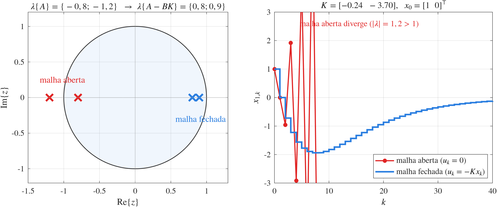
Os pólos de malha aberta ($-0{,}8$ e $-1{,}2$) estão sobre/fora do círculo unitário: o sistema é instável e alterna de sinal. Com $u_k=-Kx_k$ os pólos vão para $0{,}8$ e $0{,}9$ e a resposta converge sem oscilação.
Equação de Ackermann (SISO)
$$ K=\begin{bmatrix} 0 & \cdots & 1 \end{bmatrix}\mathcal{C}^{-1}\gamma(A) $$
obs: $\gamma(A)=A^{n}+\beta_1A^{n-1}+\cdots+\beta_{n-1}A+\beta_n I$Exemplo:
$$ x_{k+1}=\begin{bmatrix} -1.2 & 1 \\ 0 & -0.8 \end{bmatrix}x_k+\begin{bmatrix}0.5\\ 1\end{bmatrix}u_k $$ Pólos desejados: $p_1=0.8$ e $p_2=0.9$.
Qual o ganho $K$?
Exemplo: solução via Ackermann
A = [-1.2 1; 0 -0.8]; B = [0.5; 1];
K = acker(A, B, [0.8 0.9]) % [5.25 -6.325]
eig(A - B*K) % 0.8, 0.9Exemplo: resposta em malha fechada
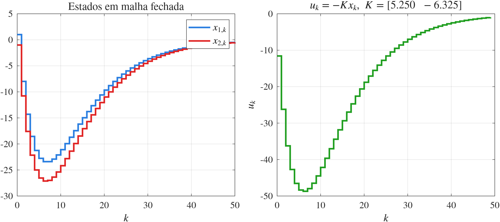
Simulação de $x_{k+1}=(A-BK)x_k$ a partir de $x_0=[1\;\,-1]^\top$. Pólos em $0{,}8$ e $0{,}9$ levam a uma convergência lenta; ganhos grandes (e esforço de controle grande) surgem porque a planta tem pólos em $-1{,}2$ e $-0{,}8$, longe dos pólos desejados.
Observadores de Estado:
Observadores de Estado:
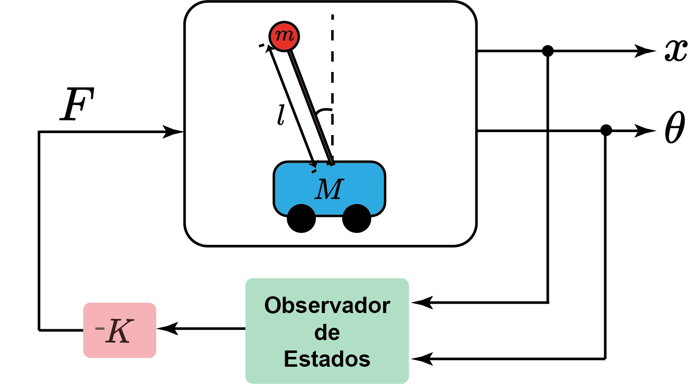
Observadores de Estado:

Observadores de Estado:

Observadores de Estado:

Modelo em espaço de estados
Sistema: $$ \begin{aligned} x_{k+1}&=A_dx_k+B_du_k\\ y_k&=Hx_k+Du_k \end{aligned} $$
Observador $$ \begin{aligned} \hat{x}_{k+1}&=A_d\hat{x}_k+B_du_k+L(y_k-\hat{y}_k)\\ \hat{y}_k&=H\hat{x}_k+Du_k \end{aligned} $$
Dinâmica do Erro de Estado
$$ \begin{aligned} \varepsilon_{k+1}&=x_{k+1}-\hat{x}_{k+1}\\ &=Ax_k+Bu_k-\bigl(A\hat{x}_k+Bu_k+L(y_k-\hat{y}_k)\bigr)\\ &=A\varepsilon_{k}-L\bigl(Hx_k+Du_k-(H\hat{x}_k+Du_k)\bigr)\\ &=(A-LH)\varepsilon_k \end{aligned} $$
Portanto,$$ \varepsilon_{k+1}=(A-LH)\varepsilon_k $$
Dinâmica do Erro de Estado
$$ |\lambda\{A-LH\}| < 1 $$
então o observador converge para o estado verdadeiro!
Boa prática de projeto: a dinâmica do erro de estado do observador ser pelo menos 2x mais rápido que a dinâmica do sistema!
Observador: escolha dos pólos
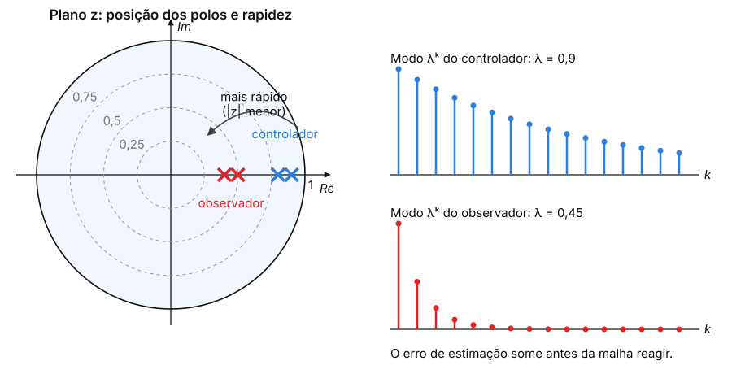
No plano $z$, quanto menor $|z|$, mais rápido o modo $\lambda^k$ decai. Os pólos de $A-LH$ são colocados mais próximos da origem que os de $A-BK$.
Equação de Ackermann (SISO)
$$ L=\gamma(A)\mathcal{O}^{-1}\begin{bmatrix} 0 & 0 & \cdots & 1 \end{bmatrix}^\trp $$
obs: $\gamma(A)=A^{n}+\beta_1A^{n-1}+\cdots+\beta_{n-1}A+\beta_n I$Exemplo de observador de estados
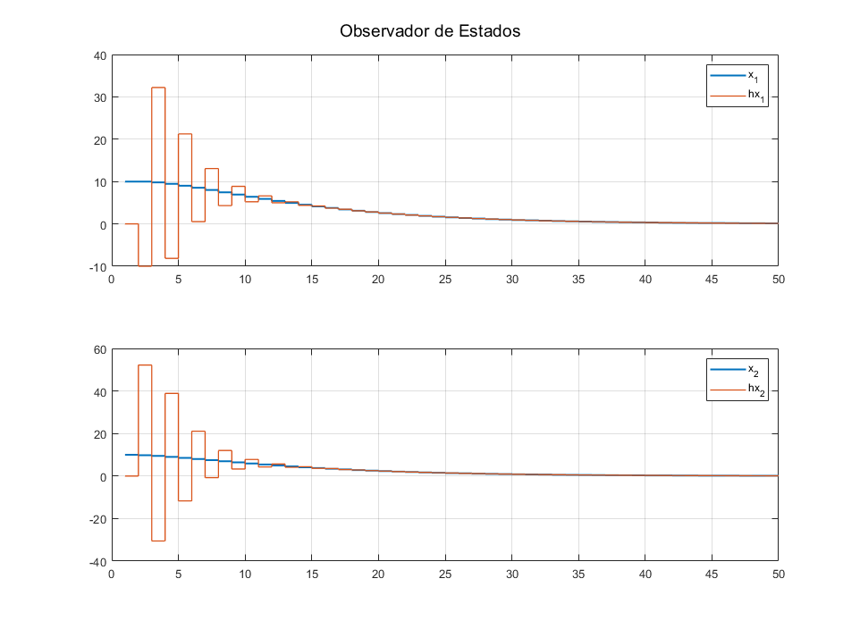
Observador de estados: simulação
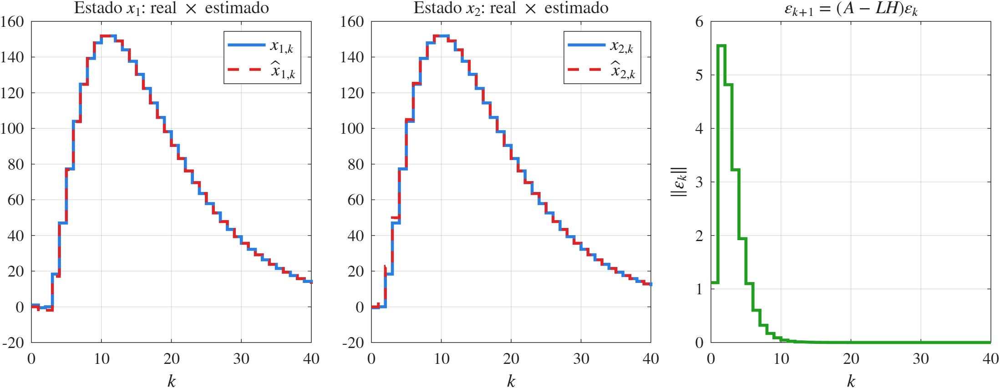
Planta $A=\begin{bmatrix}0&1\\-0.96&-2\end{bmatrix}$, $H=[1\;0]$, controle $u_k=-K\hat x_k$ com pólos $0{,}8$ e $0{,}9$; observador com pólos $0{,}4$ e $0{,}5$ ($L=[-2{,}9\;\;5{,}04]^\top$). Mesmo partindo de $\hat x_0=0\neq x_0$, a estimativa converge em poucas amostras.
Observador de estados: código
A = [0 1; -0.96 -2]; B = [0; 1]; H = [1 0];
K = acker(A, B, [0.8 0.9]); % controlador
L = acker(A', H', [0.4 0.5])'; % observador (dualidade)
eig(A - L*H) % 0.4, 0.5
x = [1; -0.5]; xh = [0; 0]; % estado real e estimado
for k = 1:40
y = H*x; yh = H*xh;
u = -K*xh; % realimenta o estado ESTIMADO
x = A*x + B*u;
xh = A*xh + B*u + L*(y - yh); % observador de Luenberger
endDualidade: projetar $L$ para $(A,H)$ equivale a projetar um ganho de realimentação para $(A^\top,H^\top)$.
Rastreamento vs Regulação
Regulação
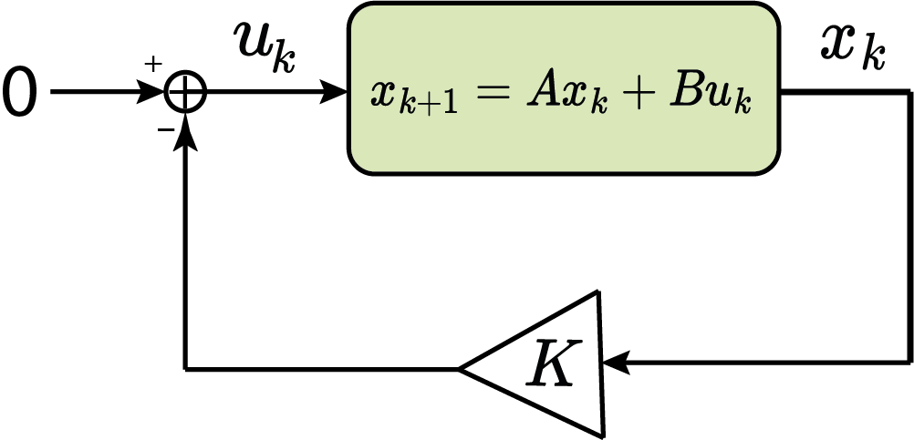
Rastreamento vs Regulação
Rastreamento vs Regulação
Rastreamento
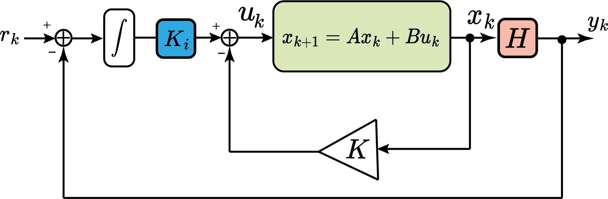
Rastreamento vs Regulação
Rastreamento
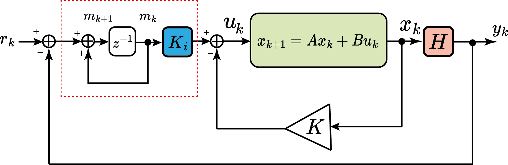
Rastreamento
Sistema: $$ \begin{aligned} x_{k+1}&=A_dx_k+B_du_k\\ y_k&=Hx_k+Du_k \end{aligned} $$
Integrador $$ \begin{aligned} m_{k+1}&=m_k+(r_k-y_k)\\ \end{aligned} $$
Rastreamento
Sistema: $$ \begin{aligned} x_{k+1}&=A_dx_k+B_du_k\\ y_k&=Hx_k+Du_k \end{aligned} $$
Lei de controle: $$ \begin{aligned} u_k=-Kx_k+K_im_k \end{aligned} $$
Rastreamento
Sistema: $$ \begin{aligned} x_{k+1}&=(A_d-B_dK)x_k+B_dK_im_k\\ m_{k+1}&=m_k+r_k-y_k\\ y_k&=Hx_k+Du_k \end{aligned} $$
Por simplicidade, suponha $D=0$.Rastreamento
Sistema: $$ \begin{aligned} x_{k+1}&=(A_d-B_dK)x_k+B_dK_im_k\\ m_{k+1}&=m_k+r_k-Hx_k\\ y_k&=Hx_k \end{aligned} $$
Por simplicidade, suponha $D=0$.Rastreamento
Sistema Aumentado: $$ \begin{aligned} \begin{bmatrix} x_{k+1}\\ m_{k+1} \end{bmatrix} &=\begin{bmatrix} A_d-B_dK & B_dK_i \\ -H & I \end{bmatrix}\begin{bmatrix} x_{k}\\ m_{k} \end{bmatrix}+\begin{bmatrix} 0\\ I \end{bmatrix} r_k \end{aligned} $$
Rastreamento
Sistema Aumentado: $$ \begin{aligned} \begin{bmatrix} x_{k+1}\\ m_{k+1} \end{bmatrix} &=\Bigl(\begin{bmatrix} A_d & 0 \\ -H & I \end{bmatrix}-\begin{bmatrix} B_d \\ 0 \end{bmatrix}\begin{bmatrix} K & -K_i \end{bmatrix}\Bigr)\begin{bmatrix} x_{k}\\ m_{k} \end{bmatrix}+\begin{bmatrix} 0\\ I \end{bmatrix} r_k \end{aligned} $$
Rastreamento
Sistema Aumentado: $$ \begin{aligned} \begin{bmatrix} x_{k+1}\\ m_{k+1} \end{bmatrix} &=\Bigl(\underbrace{\begin{bmatrix} A_d & 0 \\ -H & I \end{bmatrix}}_{\mathcal{A}}-\underbrace{\begin{bmatrix} B_d \\ 0 \end{bmatrix}}_{\mathcal{B}}\underbrace{\begin{bmatrix} K & -K_i \end{bmatrix}}_{\mathcal{K}}\Bigr)\begin{bmatrix} x_{k}\\ m_{k} \end{bmatrix}+\begin{bmatrix} 0\\ I \end{bmatrix} r_k \end{aligned} $$
Rastreamento
Sistema Aumentado: $$ \begin{aligned} \begin{bmatrix} x_{k+1}\\ m_{k+1} \end{bmatrix} &=\Bigl(\mathcal{A}-\mathcal{B}\mathcal{K}\Bigr)\begin{bmatrix} x_{k}\\ m_{k} \end{bmatrix}+\begin{bmatrix} 0\\ I \end{bmatrix} r_k \end{aligned} $$
Basta determinar o ganho $\mathcal{K}$ que torne o sistema aumentado estável! $$ |\lambda\{\mathcal{A}-\mathcal{B}\mathcal{K}\}|<1 $$Rastreamento
Condição para rastreamento do sistema: $$ \begin{aligned} \begin{bmatrix} I-A_d & -B_d \\ H & 0 \end{bmatrix} \end{aligned} $$ precisa ter rank completo.
Consequências:- Além do rank completo, o par $(A_d,B_d)$ precisa ser controlável;
- A planta não pode possuir zeros em $z=1$ (o integrador cancelaria o zero);
- Número de entradas $\ge$ número de saídas rastreadas ($H$ com rank completo de linhas).
Rastreamento
Rastreamento
Rastreamento: simulação
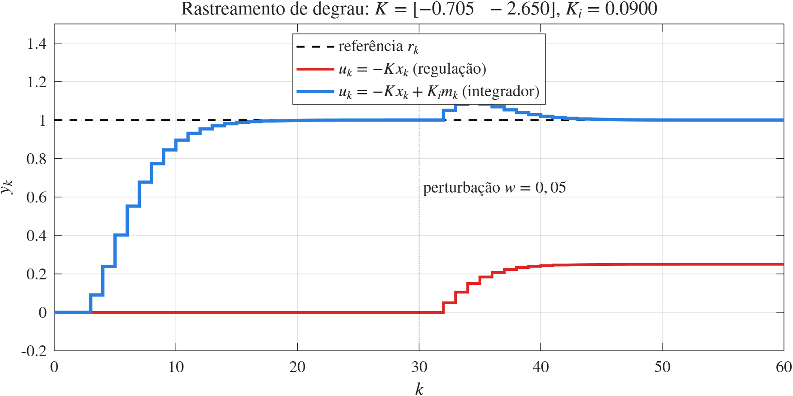
Referência degrau $r_k=1$ e perturbação constante na entrada em $k=30$. Só com $u_k=-Kx_k$ a saída não segue $r$ e sofre desvio permanente; com o integrador ($K=[-0{,}705\;-2{,}65]$, $K_i=0{,}09$, pólos $0{,}5;\,0{,}55;\,0{,}6$) o erro em regime é nulo mesmo com a perturbação.
Rastreamento: código
A = [0 1; -0.96 -2]; B = [0; 1]; H = [1 0];
% sistema aumentado [x; m]
Aa = [A zeros(2,1); -H 1];
Ba = [B; 0];
Ka = acker(Aa, Ba, [0.5 0.55 0.6]); % Ka = [K -Ki]
K = Ka(1:2); Ki = -Ka(3);
x = [0; 0]; m = 0; r = 1;
for k = 1:60
y = H*x;
u = -K*x + Ki*m; % lei de controle
x = A*x + B*u;
m = m + (r - y); % integrador do erro
endRastreamento: quadricóptero em trajetória "8"
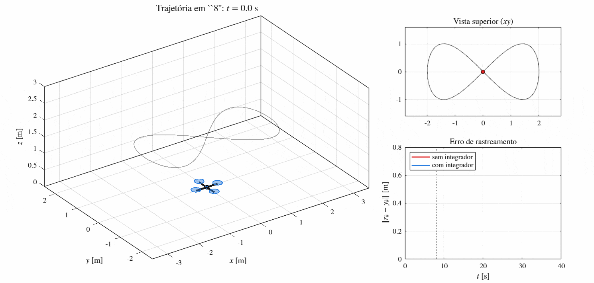
Modelo linearizado em hover ($T_s=0{,}02$ s) com feedforward da referência; vento constante a partir de $t=8$ s. Sem integrador: erro permanente causado pelo vento. Com integrador $m_{k+1}=m_k+(r_k-y_k)$: o erro volta a zero.
Próxima aula teórica
Controle LQR
$$ J=\sum_{k=0}^\infty x_k^\trp Q x_k +u_k^\trp R u_k $$